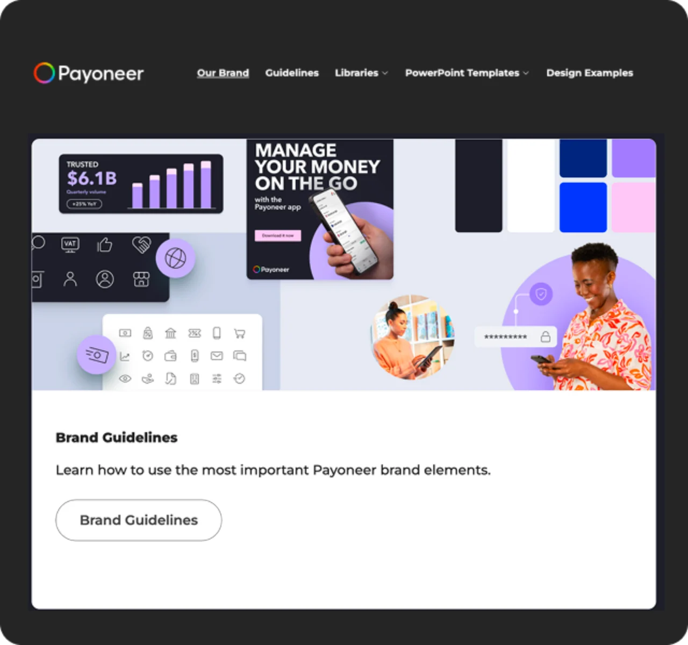
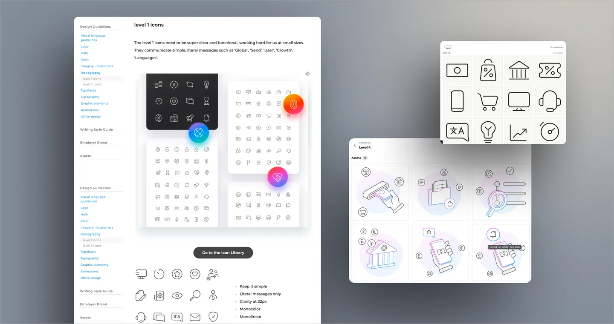
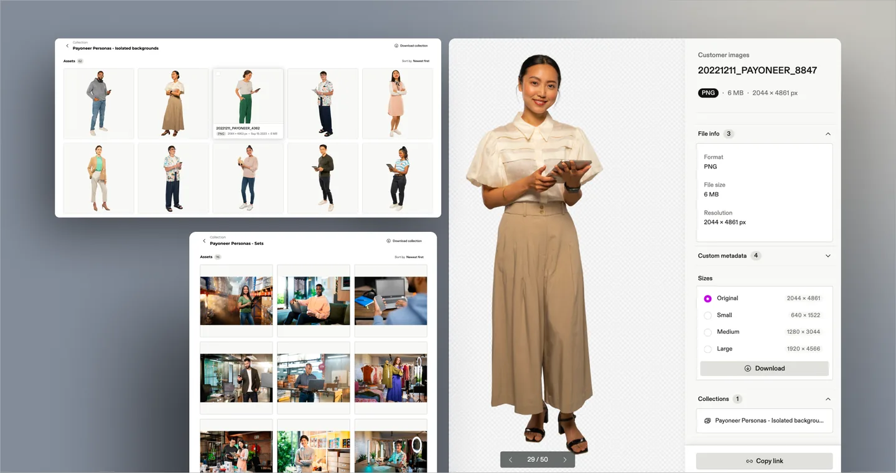
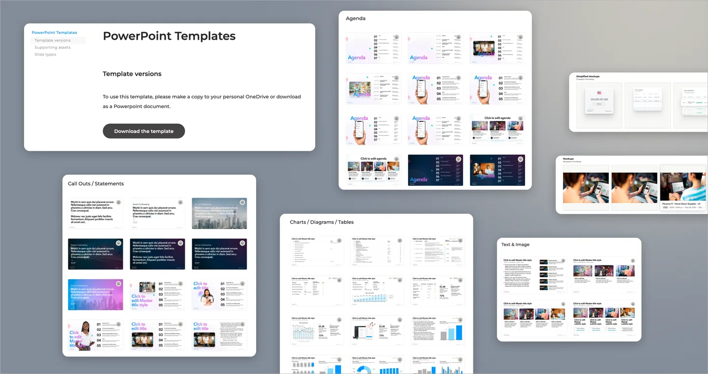

Payoneer brand portal
The guidelines lived in PDFs on shared drives, so every office read the brand slightly differently. I led the build of a portal that made the current guidance the easiest thing to find, covering logo, typography, colour, photography and tone of voice, with the assets downloadable in the same place.

What I inherited
Brand guidance as a set of PDFs on shared drives, with no way to tell which version was current. Every office worked from whichever copy it happened to have, so the brand drifted a little further apart with each campaign.
What I decided
That the fix was not a better document. The current guidance had to be the easiest thing in the building to find, and the asset had to sit next to the rule that governs it, or people would keep reaching for the copy already on their desktop.
What I led
The build of a portal covering logo, typography, colour, photography and tone of voice, with searchable guidance, downloadable collections, and the icon and persona libraries in the same place. Owned and maintained from 2022 to 2025.
Scope
Logo, type, colour, photography, tone of voiceThe five things every office was interpreting on its own
Assets beside the rule that governs themDownloadable from the page you are already reading
Icon and persona libraries includedSearchable, and downloadable as collections
Owned and maintained 2022 to 2025Three years, not a launch


